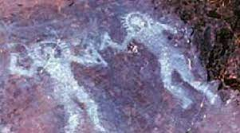
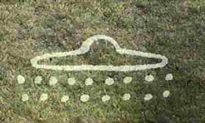
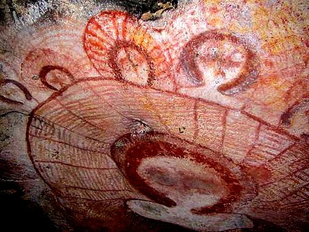

let take a step back and look at the cave men thats where we should really start they paintted there lifes on to the face of the cave to tell the stories of there journey what they have faced what they have lernt so how can it come to be that there are cave painttings of aliens ,mermaids ,dragons ect have come to light with millions more to find i bet so why did cavemen and women paint such things well its clear they saw them you have seen there painttings of them self very basic stick men so why are theses "cloud sprites" as there are known in so parts of history paintted in such ways.



all of theses cave painttings are between 5,000 years old and 7,5000years old.
now lets take a fast walk though history and what are some links to eachother
so all over the world history has been rewrote over and over again as
us earthlings have developed but there are so many links that people
blindly miss lets make some here today
all across the world women have been pick to have theses great gifts blessed apon
them but what if theses gifts are aka pandoras box what if pandoras box
was not a box what if it was a hybrid child thats why hope is inside hope
that they will make the earth a better place .
"all over the world pandoras box description of this "box" cahnges shape size but let me ask u what if this box was a child as we all know the love of a child she will lose her life for that child maybe thats why hope was in the "box" maybe hope for human kind "
still not following lets take a look at the bible mary was a un touched women
who had a child who was sent from the heavens right
so the story goes mary was a asleep and was awoken by bright lights then
all of a suddon a angle from the heavens apeard who told her that she is with child
and to name it jeuse.
YES im saying jeuse was a hybrid half alien half being
okay so why is this my theory well we all know what we have been told
makes us question it but now think if he was a hybrid makes sence rigth
and even in the bible there are veres about alien and ufos even in
art work from the bibile
so my theory on the bible that god is a alien jeuse is a hybrid
and the angle who visted mary was a alien doctor to make this happen,
hear me out the church has made many errors in there so called bible
god doesnt hate the lgbtq+
what he said in the old text was a man should not lay with a child
and over the years the church have made hate from something that come from protection

heres a few things all history have linked in comon
.there god/gods ect came from the heaven or the star planet
. they came done on goldden chariots with smoke and flames
. they say the gods looked havenly and not from this world
.they all have odd shaped non human figurs
. the only reson there gods is cuz they camefrom the sky
like i said just a few and i mean a few or you and my self would be here for years
but to open up your minds even more there is a show called ancient aliens is on the history channel website .